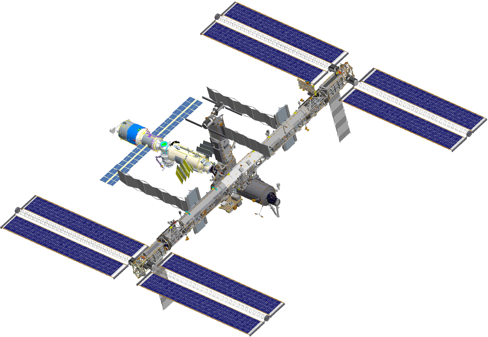
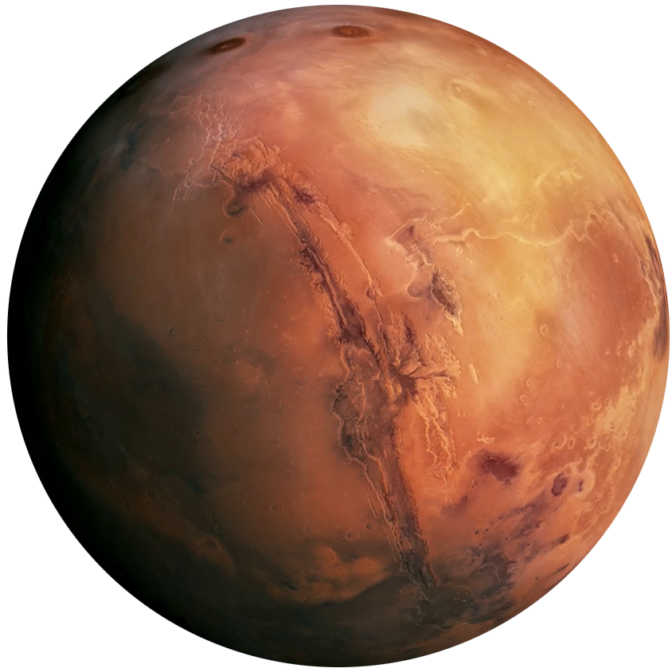
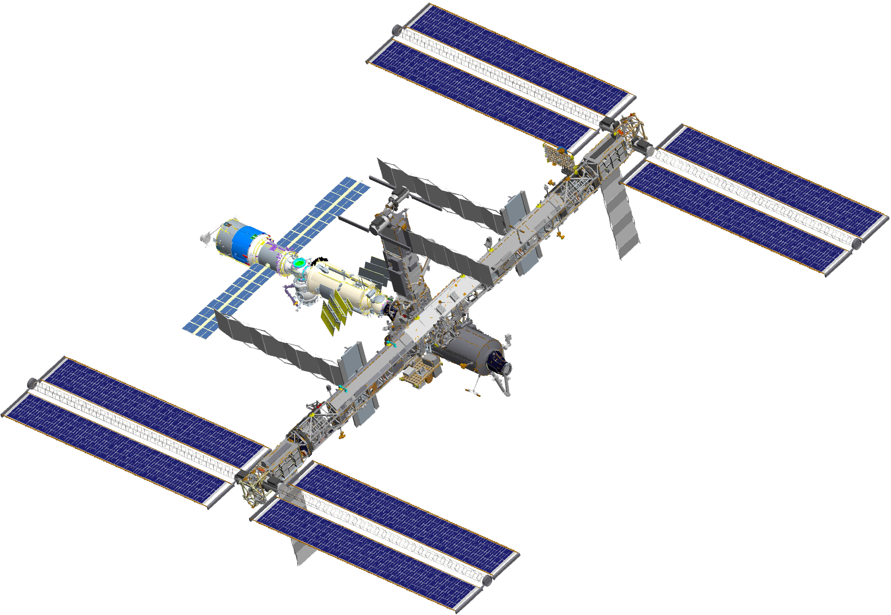
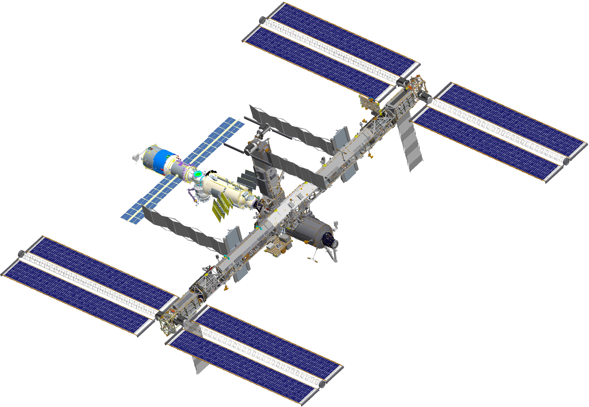
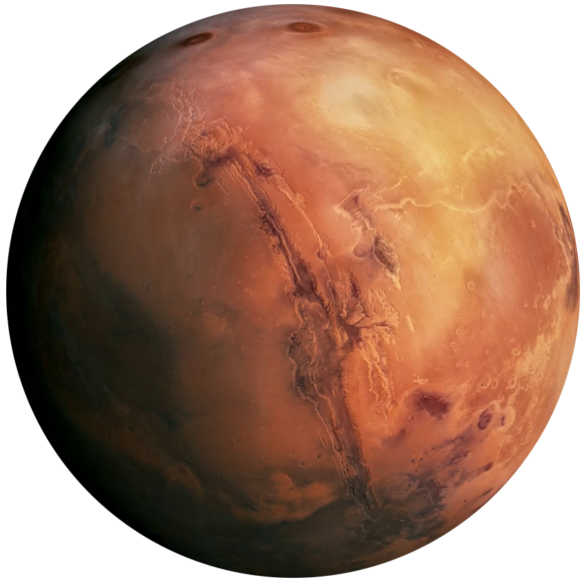
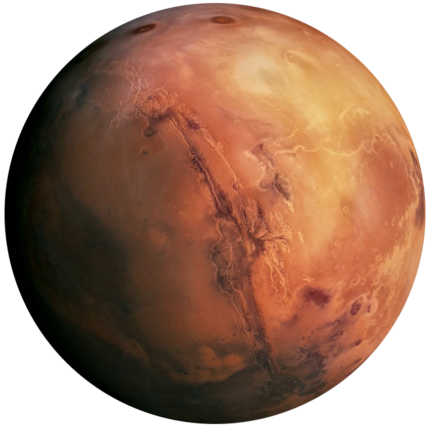

Your browser does not support the audio element.
Your browser does not support the audio element.


Choose your operation mode
MANUAL
AUTOMATIC
Scroll to navigate
Activating automated control
You have reached the end of our solar system
Click to return home
 

 
